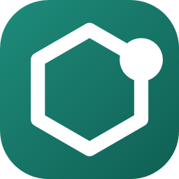
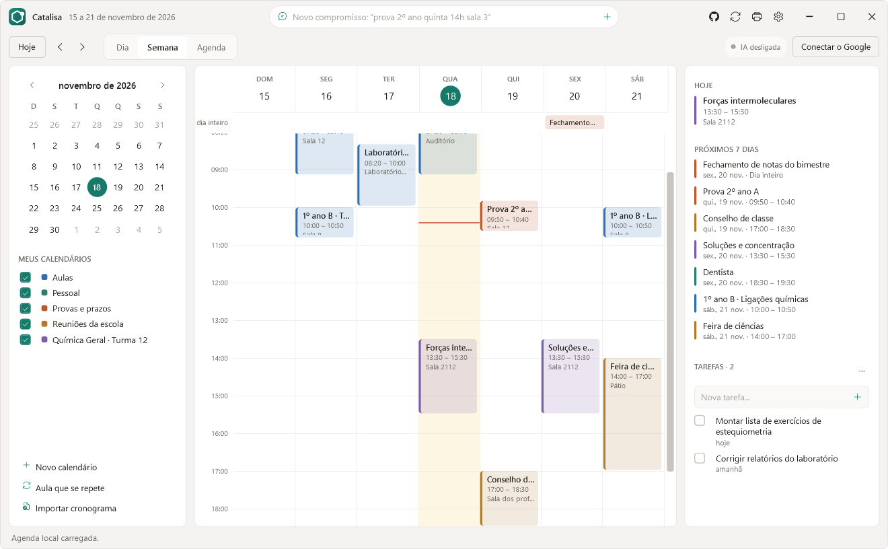
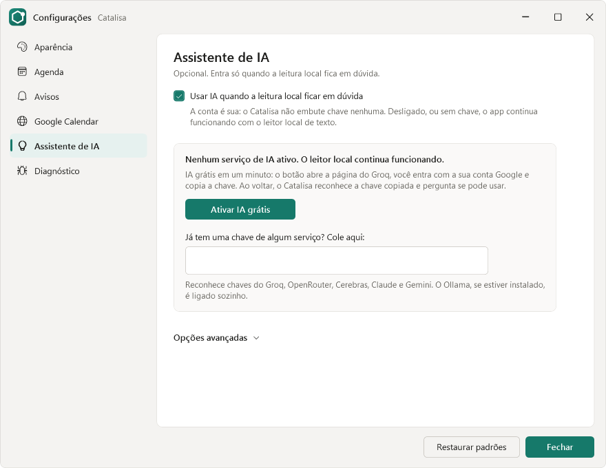
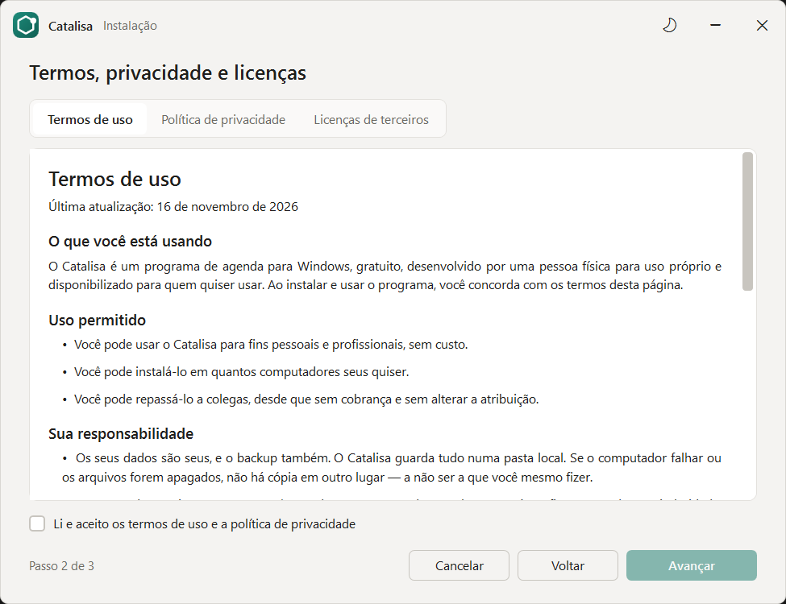

Catalisa
A agenda que entende como você escreve
Versão 1.00.0 · gratuito · Windows 10 e 11

A semana na tela: aulas, provas e reuniões, cada uma no seu calendário.
O que é
Catalisa é um programa de agenda para Windows, feito para a rotina de quem dá aula. Em vez de preencher formulários, você escreve o compromisso como falaria — “prova do 2º ano quinta 14h sala 3” — e ele entende a data, o horário, a sala e em qual dos seus calendários aquilo entra.
O nome vem de catalisador: acelera a rotina sem se consumir nela.
O que ele faz
- Entende linguagem natural. Datas relativas, intervalos de horário, salas e avisos, tudo numa frase só.
- Importa o cronograma da escola. Você arrasta o PDF ou o Word para a janela e a IA monta os compromissos, mesmo que a tabela não siga formato nenhum.
- Cronograma alterado? Substitui inteiro. Cada arquivo importado vira uma agenda própria, então reimportar troca tudo daquele cronograma sem bagunçar o resto.
- Aulas que se repetem. Cadastre uma vez e o semestre inteiro se preenche.
- Avisa com a janela fechada. Notificação do Windows, ícone na bandeja e início junto com o sistema.
- Tarefas separadas dos compromissos. “Montar a prova” é tarefa; “aplicar a prova” é compromisso.
- Imprime a semana. Uma folha A4 deitada, feita para levar na pasta.
- Sincroniza com o Google Agenda, inclusive os cronogramas importados, que passam a aparecer no celular.
- Tema claro e escuro, acompanhando o Windows.
IA grátis, em um clique
A IA é opcional: o leitor de frases do próprio Catalisa resolve a maior parte sozinho. Para as frases confusas e para ler cronogramas, dá para ligar a IA de graça: o botão Ativar IA grátis abre a página do Groq, você entra com a sua conta Google e copia a chave. Ao voltar, o Catalisa reconhece a chave copiada e pergunta se pode usá-la — nada é ativado sem você confirmar.
Também funcionam Claude, Gemini, OpenRouter, Mistral e Cerebras. Se o Ollama estiver instalado, a IA roda no próprio computador, sem chave e sem mandar nada para fora.

Instalar
- Baixe o Catalisa-1.00.0.exe na página de versões.
- Abra o arquivo. Na primeira vez o Windows pode mostrar “O Windows protegeu o computador”: clique em Mais informações → Executar assim mesmo. O aviso aparece porque o programa é novo e não tem certificado pago de editor, não porque haja algo errado com ele.
- Leia e aceite os termos, escolha os atalhos e pronto. Não pede senha de administrador nem instala nada além do próprio Catalisa.
Atualizações chegam sozinhas. O Catalisa baixa a versão nova em segundo plano e instala quando você reinicia ou sai do programa, nunca no meio do uso. Dá para desligar em Configurações → Diagnóstico.
Para desinstalar: Configurações do Windows → Aplicativos → Catalisa. A agenda fica guardada, a não ser que você marque para apagar.

O instalador mostra os termos de uso, a política de privacidade e as licenças antes de instalar.
Onde os seus dados ficam
Na sua máquina. O Catalisa não tem servidor, não cria conta e não manda a sua agenda para lugar nenhum por conta própria. Os compromissos ficam num arquivo na sua pasta de usuário, e a autorização do Google fica só nesse computador.
A parte de inteligência artificial é opcional e usa a conta que você mesmo configurar. Os detalhes de o que é enviado, quando, e o que nunca sai da máquina estão na política de privacidade.
Requisitos
- Windows 10 ou 11 (64 bits). Não precisa instalar mais nada: o programa já traz tudo de que precisa.
- Para sincronizar com o Google: uma conta Google
- Para a leitura por IA (opcional): uma chave grátis do Groq, ou de Claude, Gemini, OpenRouter, Mistral ou Cerebras — ou o Ollama no próprio computador, sem chave